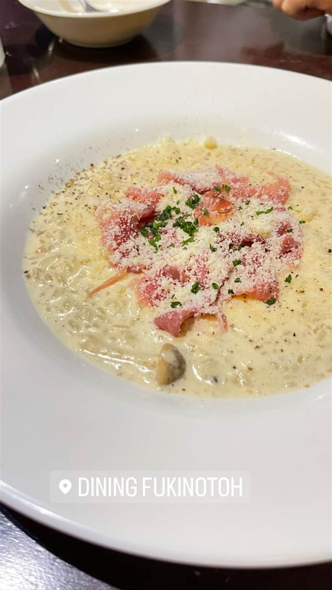
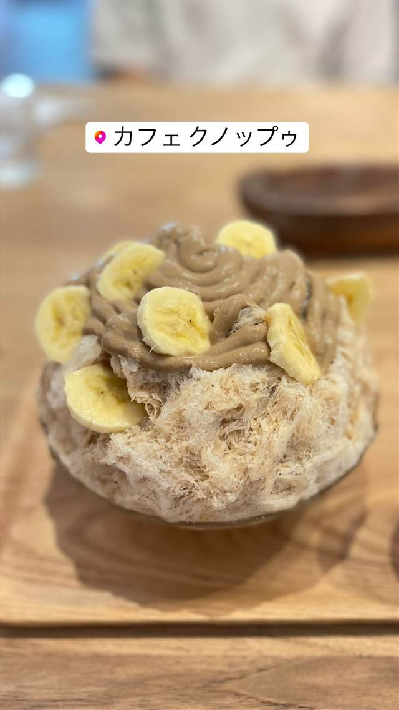

らーめん 雅楽（ガラク）
「ど・みそ」仕込み、7種の味噌をブレンドした濃厚味噌ラーメン
らーめん 雅楽
あざみ野の「らーめん雅楽」は、味噌ラーメンの名店「ど・みそ」で修行した店主が2014年に開いた一軒。7種の味噌をブレンドした濃厚味噌ラーメンと、火入れしない生醤油だれの淡麗系、系統の異なる二枚看板が楽しめる。
TRIVIA
豆知識
- ラーメン店らしからぬカフェ風の内装で女性一人でも入りやすい
- 味噌と生醤油、系統の異なる2枚看板を掲げる
REVIEWS
世間の評判
88.8ラーメンDB3.70食べログ
独創的な味噌限定メニューの数々
- 濃厚な赤味噌をベースにした独創的な限定メニューを評価する声が多い
- トマトチーズや胡麻担々麺など味噌の変化球メニューを楽しむ人が多い
- 限定メニューは値段がやや高めに感じるという声もある
ラーメンデータベース 口コミ95件・最新 2026-08
| 創業 | 2014年7月創業 |
|---|---|
| 系譜 | 味噌ラーメンの人気店「ど・みそ」（町田店など）で店主が修行 |
| 看板 | 濃厚味噌ラーメン（7種の味噌をブレンド）、生揚げ醤油ラーメンの二枚看板 |
| こだわり | 鶏・豚・魚介のスープに背脂を合わせた濃厚味噌だれと、火入れしない「生揚げ」醤油だれの2種を提供 |
| どこから | 東京から1時間ほど |
| 営業時間 | 月・火 休み 水〜日 11:30-14:45、18:00-21:00 |
| 予算 | 昼 ～¥999 夜 ～¥999 |
| 定休日 | 月曜・第1,3火曜 |
| 場所 | あざみ野 神奈川県横浜市青葉区新石川2-15-1 第2グリーンシティビル1F |
| メモ | カウンターのみでカフェ・バーのような内装、女性客・家族連れも多い |
食べたもの：味噌ラーメン
NEARBY
近い店・同じ系統の店
-

パスタ あざみ野 DINING FUKINOTOH あざみ野 ボリューム満点のランチスパゲティが名物のチーズ料理専門イタリアン 昼 ¥1,000～¥1,999 夜 ¥4,000～¥4,999 -

カフェ あざみ野 カフェ クノップゥ 48時間かけて凍らせた純氷で仕上げるふわふわのかき氷 昼 ¥1,000～¥1,999 夜 ¥1,000～¥1,999 -
 味噌 池袋駅
味噌麺処 田坂屋
花道庵で5年半修行し公認で独立した濃厚味噌ラーメン
昼 ～¥999 夜 ～¥999
味噌 池袋駅
味噌麺処 田坂屋
花道庵で5年半修行し公認で独立した濃厚味噌ラーメン
昼 ～¥999 夜 ～¥999
-
 味噌 蒲田駅
らーめん蓮 蒲田本店
元プロボクサーの店主が仕上げる泡立てまろやかな味噌らーめん
昼 ¥1,000～¥1,999 夜 ¥1,000～¥1,999
味噌 蒲田駅
らーめん蓮 蒲田本店
元プロボクサーの店主が仕上げる泡立てまろやかな味噌らーめん
昼 ¥1,000～¥1,999 夜 ¥1,000～¥1,999
-
 味噌 地下鉄南北線すすきの駅
らーめん信玄 南6条店
バター味噌ラーメンを考案した元祖店で50時間煮込む清湯スープが看板
昼 ~¥999 夜 ~¥999
味噌 地下鉄南北線すすきの駅
らーめん信玄 南6条店
バター味噌ラーメンを考案した元祖店で50時間煮込む清湯スープが看板
昼 ~¥999 夜 ~¥999
-
 味噌 京橋
東京スタイルみそらーめん ど・みそ 京橋本店
5種の味噌をブレンドした東京スタイルの味噌ラーメン
昼 ¥1,000～¥1,999 夜 ¥1,000～¥1,999
味噌 京橋
東京スタイルみそらーめん ど・みそ 京橋本店
5種の味噌をブレンドした東京スタイルの味噌ラーメン
昼 ¥1,000～¥1,999 夜 ¥1,000～¥1,999